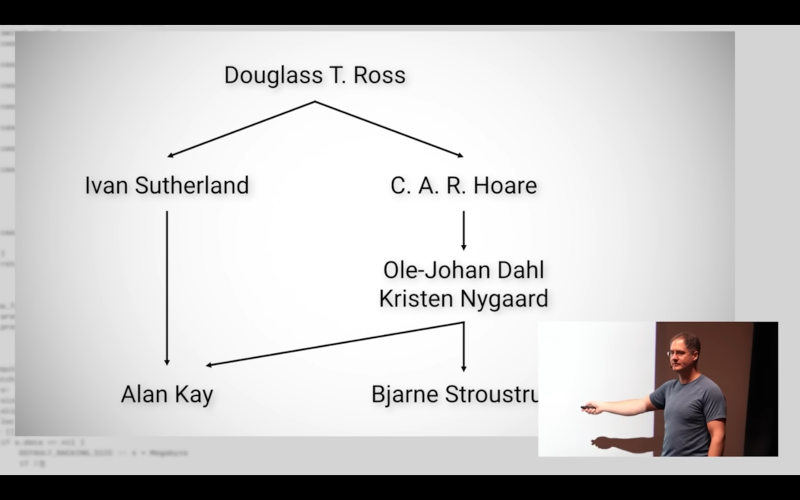
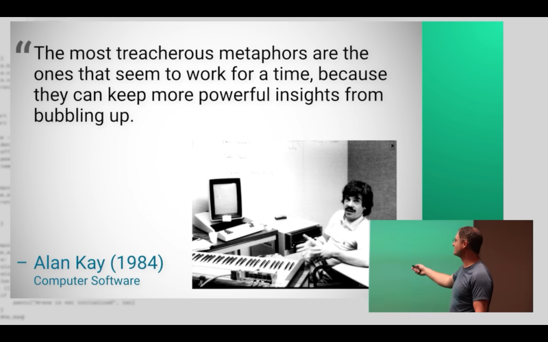

OOP was a mistake#
This rant is work-in-progress as I keep encountering funny quotes over time.
I really recommend this talk as a lot of research came into the presentation:
Casey Muratori – The Big OOPs: Anatomy of a Thirty-five-year Mistake – BSC 2025

There is also succinct (10 mins) Casey's story:
On libraries shipped in OOP style:
Shipping Object-Oriented code sucks for integration. All of the principles of Object-Oriented fight the ability to integrate stuff.
The whole paradigm is a LIE. The lie is that if something is Object-Oriented then it will be easier for someone else to integrate it because it's all encapsulated but the truth is the opposite.
The only things they can do are things you've already thought of and provided interfaces for.
I don't necessarily agree with everything Casey is saying (just almost all of it) as I do like many Alan Kay's ideas but I am also not convinced that everything should be designed as a living cell organism (Alan's original idea for Object-Oriented - more in other sections).

I definitely agree with Casey that if software is running on a single compute (no distributed computing) then creating artificial barriers (encapsulation) results in inefficient friction and bloated layered software.
Out of the Tar Pit#
The paper Out of the Tar Pit is partial rebuttal to the No Silver Bullet by Fred Brooks of The Mythical Man-Month fame.
The bottom line is that all forms of OOP rely on state (contained within objects) and in general all behaviour is affected by this state. As a result of this, OOP suffers directly from the problems associated with state described above, and as such we believe that it does not provide an adequate foundation for avoiding complexity.
To make things more concrete we then give an outline for a potential complexity-minimizing approach based on functional programming and Codd’s relational model of data.
Disclaimer#
I am not vehemently against the religion of OOP - I can see the benefits in some cases but I believe that we did not get here on the merit of OOP.
<joke>I am inclined to think that it was the hard push from book publishers
(muddy topic needs more books)</joke> and especially the
Java craze with
Sun's push behind it
- they even changed the stock
symbol
from SUNW to JAVA ffs:
Sun stated that the brand awareness associated with its Java platform better represented the company's current strategy.
Later below I do mention that the original correct message-passing version of the Object-Oriented programming style can be elegant and useful.
I can also see how well (!) designed class-ical Object-Oriented style can help to reign in the code complexity but the idea to layer one abstraction upon another abstraction upon another... creates a system which is not only fragile and complex (that is your problem to maintain as programmer) but most importantly it results in a software which is slow and bloated and that is a problem for me, you and everyone who wants to use it.
If everyone will create bloated software then computing suffers at large as this culture of OOP styled bloated software becomes a new norm (already did).
Once we reach a point where I need more memory and my CPU has to do more cycles because you as programmer tried to make your life little easier (did you though?) then I must go on a crusade:
Most of my time I spend using the computer and a software running on it - do not waste my resources and my time please...
Alternatives exist#
Functional programming#
This programming paradigm is well-defined and clean albeit arguably harder to use as the imperative style of programming is more natural to most of us - everyone can follow cooking recipe but not everyone can implement a loop with tail-recursion.
You can go down the rabbit hole of using very formal languages with pure functions - the program can be actually mathematically proven to be correct.
I will bring up again the paper Out of the Tar Pit:
The primary strength of functional programming is that by avoiding state (and side-effects) the entire system gains the property of referential transparency - which implies that when supplied with a given set of arguments a function will always return exactly the same result (speaking loosely we could say that it will always behave in the same way). Everything which can possibly affect the result in any way is always immediately visible in the actual parameters.
You could also use more pragmatic approach and have some mutable state in controllable manner - many languages are actually multi-paradigm.
I am aware that many functional languages might perform worse than some "OOP" languages as the usual implementation requires fat runtime and garbage-collection...
Data-Oriented Design#
I would prefer to use software where the author understands the hardware architecture and CPU caches.
The approach is to focus on the data layout, separating and sorting fields according to when they are needed, and to think about transformations of data.
Although OOP appears to "organise code around data", it actually organises source code around data types rather than physically grouping individual fields and arrays in an efficient format for access by specific functions.
Mike Acton - "Data-Oriented Design and C++"
Scott Meyers - "Cpu Caches and Why You Care"
Richard Fabian - Data-Oriented Design (book)
Hijacked terminology#
I can say for myself:
OOP (the one with classes) never felt right to me (with one exception: (G)UI making) - what makes sense to me are tiny objects sending messages as Alan Kay envisioned (the man who coined the term object-oriented programming):
OOP to me means only messaging, local retention and protection and hiding of state-process, and extreme late-binding of all things. It can be done in Smalltalk and in LISP. There are possibly other systems in which this is possible, but I'm not aware of them.
and I (and the man himself) believe that Erlang did it better, quote:
Significant parts of Erlang are more like a real OOP language than the current Smalltalk, and certainly the C based languages that have been painted with “OOP paint”.
and still from the same comment:
I think the remedy is to consign the current wide-spread meanings of “object-oriented” to the rubbish heap of still taught bad ideas, and to make up a new term for what I and my colleagues did.
I made up the term object-oriented and I can tell you I did not have C++ in mind.
- The creator of Erlang, Joe Armstrong said on the topic:
Erlang might be the only object oriented language because the 3 tenets of object oriented programming are that it's based on message passing, that you have isolation between objects and have polymorphism.
Object-Oriented undefined#
Object-Oriented Programming (OOP) was never properly defined - everyone has some kind of floating definition.
On one side a pure C can be OOP and on the other a language without inheritance is not deemed OOP at all by some.
We can take this quote from the creator of C++ Bjarne Stroustrup:
A language or technique is object-oriented
if and only if it directly supports:
[1] Abstraction – providing some form of classes
and objects.
[2] Inheritance – providing the ability to build
new abstractions out of existing ones.
[3] Run-time polymorphism – providing some
form of run-time binding.
OOP proponents usually list these things:
- abstraction (???)
- encapsulation
- inheritance
- polymorphism
Why these people so often include the abstraction as a pillar of OOP...
I can only say: ABSTRACTION is so fundamental to programming in general that even hacking in assembly is literally an abstraction over hardware instructions...
Every kind of programming is abstraction - every program itself is abstraction of a problem domain...
The thing is that OOP fanatics obsess over the abstraction so much that they end up with abstraction upon abstraction, bloat upon bloat until the application needs gigabytes instead of kilobytes of memory...
All of these OOP things can be done in many non-OOP languages...
And because the OOP is such a poorly defined paradigm that there was a lot and lot of books written with the turn of the century and a religion of Design Patterns was born.
If your paradigm needs dogmatic guardrails so much then maybe it is not such a good paradigm... IMHO
Not everything is tree#
Not everything can be neatly put in buckets, bins and shelves and categories.
Not everything is hierarchical and not everything resembles trees...
OOP with classes is tedious exercise in taxonomy.
It is like organizing library of books - should this (hypothetical) book
"Programming SMTP agent in C on Linux" go to the directory Linux,
Programming, C, Email or Networking?
Sure we could say C is under Programming or we could put book in
OS/Linux or Networking/Mail but we still have to choose one path and
leave out the other.
Taxonomy is hell.
Future is less classy :)#
If I hear Java then these comes to mind:
- xml, xml and another xml
- boilerplate everywhere
- noise and pile of files...
Case in point (yes, it is exaggerated joke...):
I do believe that OOP will stay (same way as Java or C++ or COBOL...) but it also will diminish:
- emergence of Scala and Kotlin adding functional style in Java world
- Clojure is another JVM language but purely functional
- many new languages are either functional or dropping class-ic OOP style: lua, elm, elixir, Julia
- some are basically C-like procedural: zig, Odin
- modern C++ tends to promote metaprogramming and functional style (Bjarne Stroustrup's paper)
- Golang has no inheritance
- even furries' favorite rust does not support OOP inheritance:
If a language must have inheritance to be object oriented, then Rust is not such a language. There is no way to define a struct that inherits the parent struct’s fields and method implementations without using a macro.
Slander with a class#
OOP criticism is a recurring event and many very smart people dropped more than few cents on this polemic:
Alan Kay on C++ at OOPSLA 1997:
I've been shown some very, very strange-looking pieces of code over the years by various people, including people in universities, that they have said is OOP code, and written in an OOP language—and actually, I made up the term object-oriented, and I can tell you I did not have C++ in mind.
Joe Armstrong's banana quote:
The problem with object-oriented languages is they’ve got all this implicit environment that they carry around with them. You wanted a banana but what you got was a gorilla holding the banana and the entire jungle.
Venerable Edsger Dijkstra and his quote:
Object-oriented programming is an exceptionally bad idea which could only have originated in California.
Author of C++ STL, Alexander Stepanov:
Yes. STL is not object oriented. I think that object orientedness is almost as much of a hoax as Artificial Intelligence. I have yet to see an interesting piece of code that comes from these OO people.
OOP Good Parts (?)#
There are places where all that class hierarchy shines...
It works well with (G)UI toolkits - designing widget sets where each widget is modelled as a class with subclasses seems to fit nicely with OOP.
It worked great for Delphi on Windows.
The OO design concept initially proved valuable in the design of graphics systems, graphical user interfaces, and certain kinds of simulation. To the surprise and gradual disillusionment of many, it has proven difficult to demonstrate significant benefits of OO outside those areas. It's worth trying to understand why.
One reason that OO has succeeded most where it has (GUIs, simulation, graphics) may be because it's relatively difficult to get the ontology of types wrong in those domains. In GUIs and graphics, for example, there is generally a rather natural mapping between manipulable visual objects and classes. If you find yourself proliferating classes that have no obvious mapping to what goes on in the display, it is correspondingly easy to notice that the glue has gotten too thick.
from the same:
OO languages make abstraction easy — perhaps too easy. They encourage architectures with thick glue and elaborate layers. This can be good when the problem domain is truly complex and demands a lot of abstraction, but it can backfire badly if coders end up doing simple things in complex ways just because they can.
This tendency is probably exacerbated because a lot of programming courses teach thick layering as a way to satisfy the Rule of Representation. In this view, having lots of classes is equated with embedding knowledge in your data. The problem with this is that too often, the ‘smart data’ in the glue layers is not actually about any natural entity in whatever the program is manipulating — it's just about being glue.
OOP is positioned well to make nice graphical data model and behavior but when it goes overboard with abstractions then this layering (IMHO) is responsible for the current state of software: bloatware